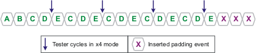
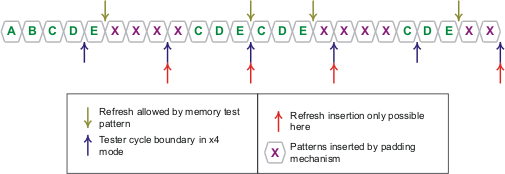

Setting up padding
When x-modes are used, memory patterns may not line up with tester cycle boundaries, requiring padding. The MTL compiler can automatically insert padding; this task describes how to set it up to do so.
About this task
Perform this procedure whenever you use the x2 mode or a higher x-mode.
Before you begin
Set up x-modes as desired.
Procedure
- Write a padding routine.
A padding routine is a subroutine that can have any name. Padding routines must take no arguments and must not contain a number of elements:
- for loops
- Global variables
- Device accesses containing the dbi macro
It must include all pins, and all pins must have the same cycle count (taking x-modes into account).
While any program statements (other than loops) can be used in a padding routine, we recommend to make the routine a single idle statement.
In place of the padding routine, you can also define a device access that will be used for padding purposes.
A very simple padding routine might look like this:
myPaddingRoutine() { Idle(); } - Call the padding routine from the APG program file using the pad()
macro; the name of the routine is the parameter for pad(). For
example:
pad(myPaddingRoutine)
The pad() macro automatically repeats the padding function you pass to it until the tester cycle boundary is reached. (If no padding is required, the padding function is not executed at all.)
Insert it:
- At the end of a test pattern (required)
- At the end of a refresh routine (required)
- Directly before or after an is{} statement (optional)
- Directly before or after a nis{} statement (optional)
- Directly before a for loop (optional)
- As the last instruction inside a for loop (optional)
- Before a call to the DC_EVENT() function, if the called event is of the
pmu type.
Padding is not permitted inside nis{} statements. If you use pad() inside the curly braces of these statements, a compiler error is usually generated. As an exception, pad() is quietly ignored inside a nis{} statement that contains another nis{} statement.
For example, this is a valid use for pad():
main() { for (...) { Act(); Wrt(); Pre(); pad(PaddingRoutine) {} /* padding before "is{}" */ is{} } pad(PaddingRoutine); /* end padding */ }Note You can disable for loop padding by compiling with the -dp0 option or disable both for loop as well as is and nis padding by compiling with the -dp1 option. If you compile with neither option, all padding is active.
Results
When you next compile the pattern, the compiler automatically inserts padding as specified to align memory test patterns with tester cycle boundaries.
Examples
End padding
If a memory pattern does not end on a tester cycle boundary, it requires end padding:

Padding to enable dynamic refreshing
If dynamic refreshes are used together with x-modes, locations in the pattern where refreshes are possible may not fall on tester cycle boundaries. Since dynamic refreshes can only occur on tester cycle boundaries, padding is required to fill the space between the point where the pattern allows refreshes and the next tester cycle boundary:

Functional changes
- Introduced before SmarTest 6.3.2
- MTP 3.0.1: Padding is now supported before and at the end of for loops
- MTP 3.0.1: Padding is required before certain DC events
- MTP 3.0.1: Padding can be partly disabled using compiler switches